Beautiful tablet menus your team can update in seconds.
We design a photo-rich menu in your brand for the tablets on your tables. When a dish sells out or a price changes, your manager updates every screen at once.
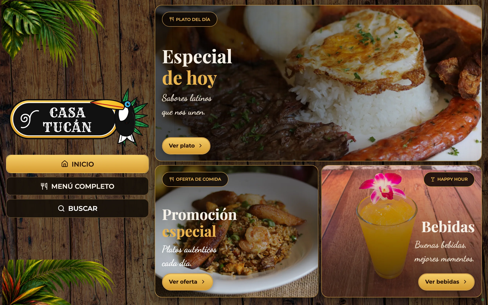
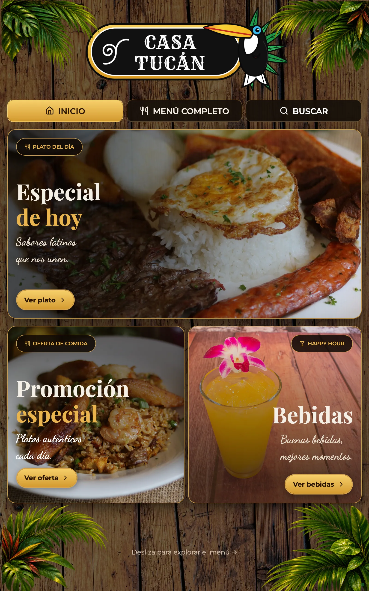
A real design studio for your menu
We lay out every page of your menu visually, with a live preview of the exact tablet. It's like Figma, made for restaurant menus. We build it with you, and you keep the studio for new seasons and promotions.
- Restyle the whole menu in one click for a new season or promotion, then fine-tune fonts, colours and backgrounds
- Ready-made sections: covers, category buttons, dish cards, specials, promotions, slideshows, opening hours
- Upright or sideways tablets: pages reflow to the screen, with tabs on top or a side menu
- Try it before it goes live, exactly as guests will see it
Your manager fixes the menu from the tablet in their hand
A long press in a hidden corner of any table's tablet opens the staff area. Enter a PIN, tap the dish, publish. Every table is updated before the next order.
- Sold out, and back on when the kitchen has it again
- Prices, sizes, descriptions and photos, or a brand-new dish
- Today's special and promotions swapped in a couple of taps
- Staff change the content, never the design, so nothing breaks
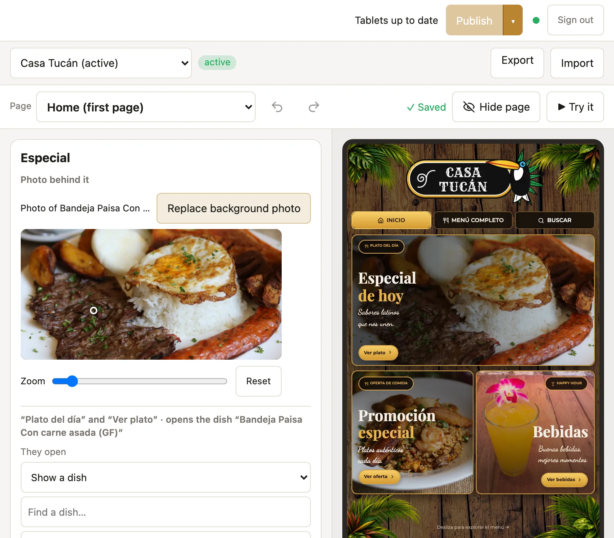
Change today's special
Staff see only what they may change on each page, with a live preview beside it.
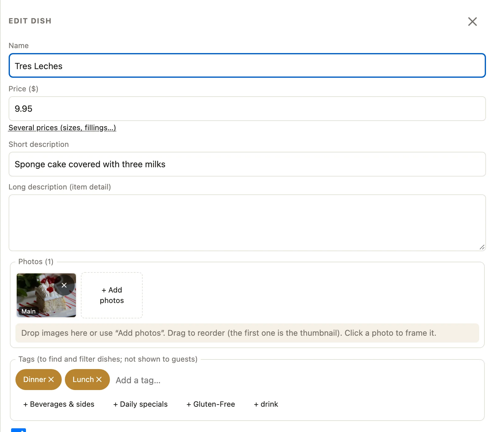
Edit any dish
Price, several sizes, descriptions, photos and availability, in one simple form.
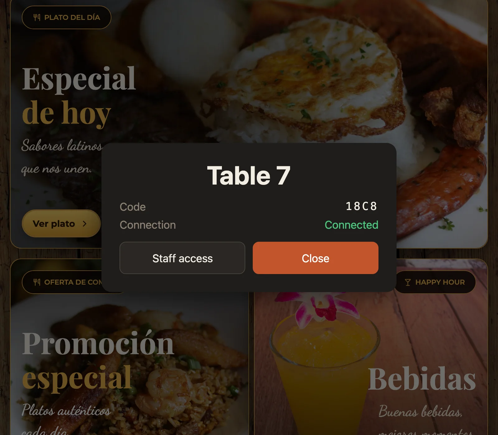
Hidden from guests
Staff open it from any table's tablet. Guests never see it.
Or from the office computer
The same staff area works from any computer on the restaurant's network. Mark a dish sold out and watch the tablet change.
- Search and filter every dish, by tags like lunch, dinner or gluten-free
- Change many dishes at once
- See what's not on the tablets yet before you publish
Built for a busy Saturday night
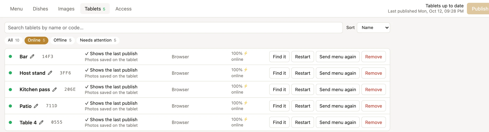
See every tablet from your desk
Which tablets are on, and whether they show the latest menu. Find one, restart it or send it the menu again without walking the floor.
- Tablets find the menu by themselves on your Wi-Fi
- Name them (Bar, Patio, Table 4); a new tablet joins with one tap
- Kiosk mode: each tablet stays locked on the menu
- App updates installed on the tablets from the office
One restaurant, three very different menus
All made with Carta for Casa Tucán, our demo restaurant, with sample dishes and photos, shown exactly as the tablet shows them.
1 · Branded, upright
Photo-led, with decorations, a special of the day, category buttons and dish photos. For a tablet standing on the table.
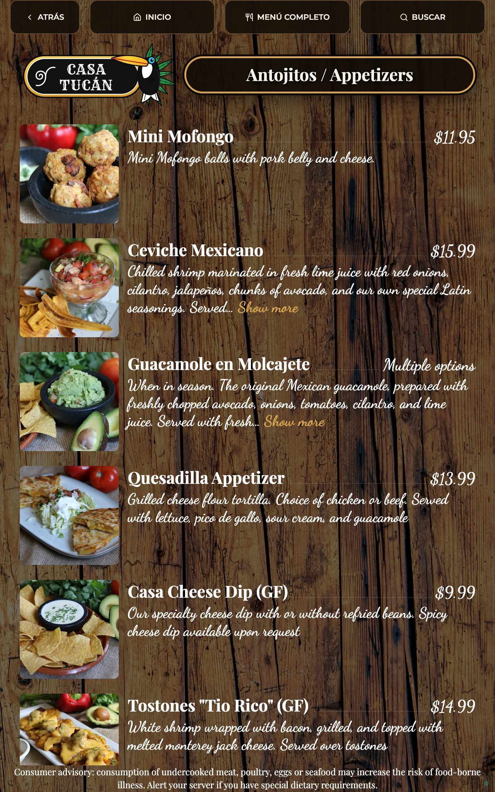
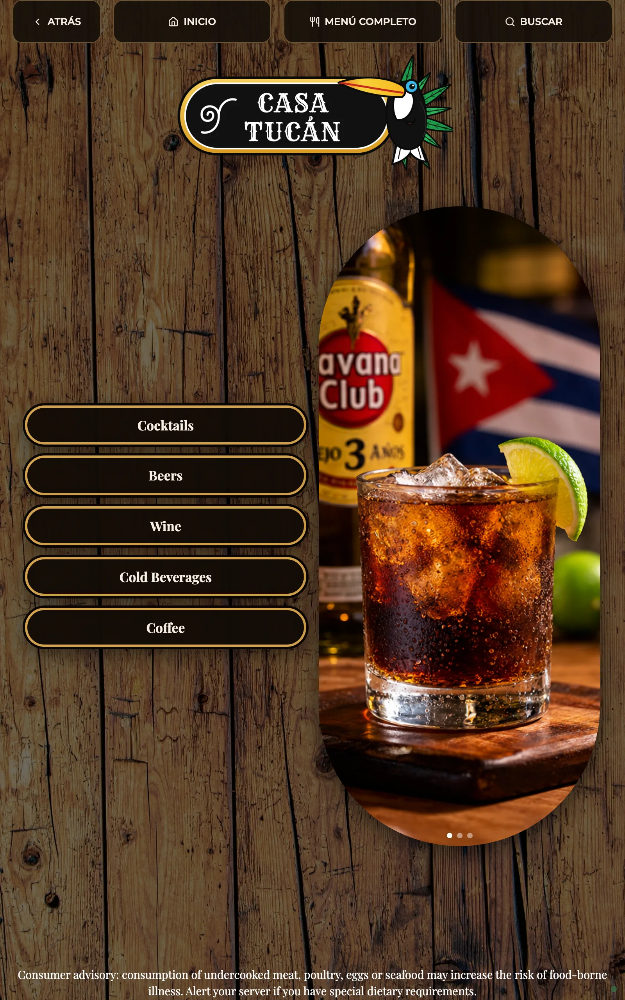
2 · Branded, sideways
The same brand on a wide screen: logo and navigation on the left, featured dishes on the right, dishes as large photo cards.
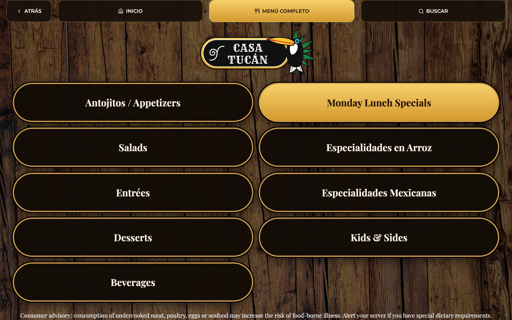
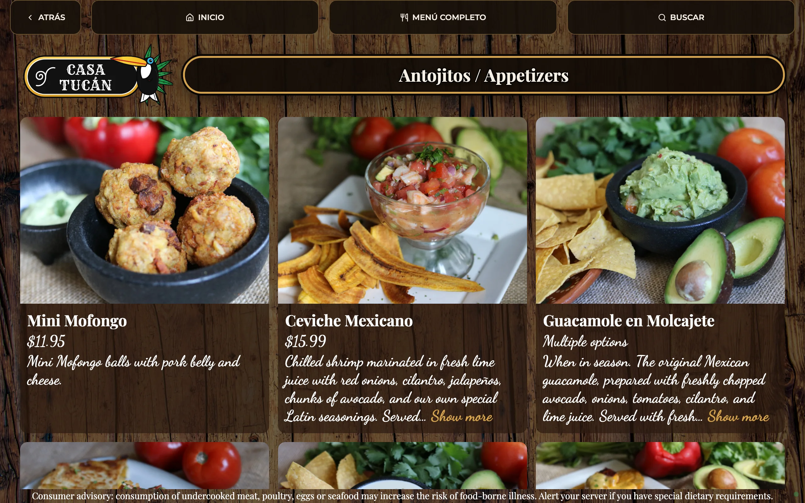
3 · Clean, one page with a side menu
Light and simple: the whole menu on one scrolling page, with a side menu that follows the sections.
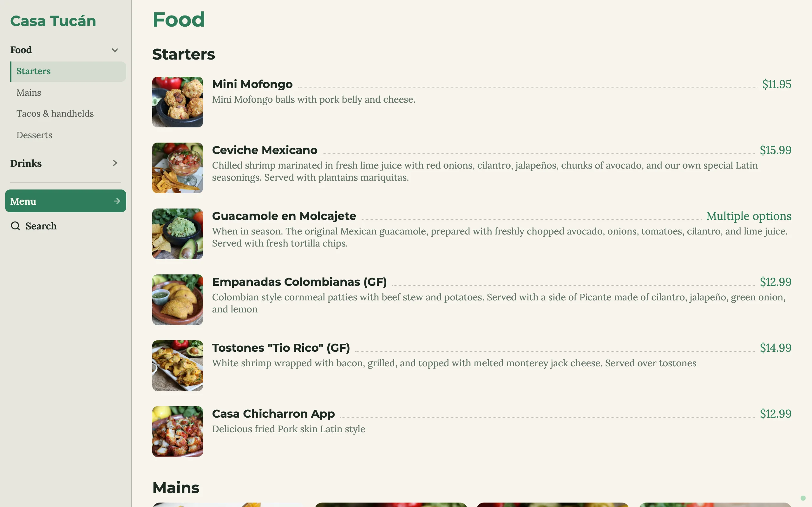
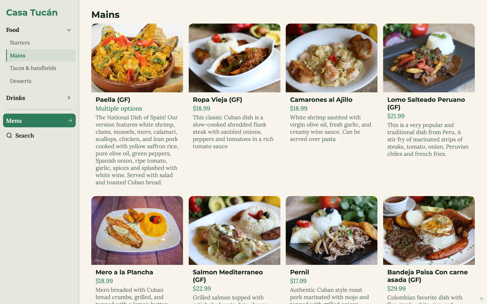
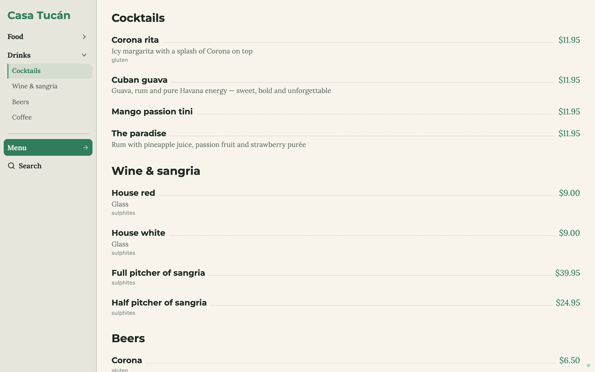
Easy to browse, hard to resist
Guests explore by touch: big photos, clear prices, and every dish one tap away.
- Dish pages with photos, descriptions, sizes and allergens
- Search across the whole menu
- Sold-out dishes are marked as soon as you change them
- Back to the start by itself when nobody has touched it for a while
From first email to tablets on the tables
We design your menu with you
Your brand, dishes and photos, for upright or sideways tablets. We can start from one of the examples above.
We set everything up
We bring the tablets, install the small computer that runs the menu, and connect everything over your Wi-Fi.
Your team runs it
We show your managers how to update it, and we're here for support, new looks and seasons.
Questions owners ask
Do my staff need to be good with computers?
No. If they can use a phone, they can mark a dish sold out: open the staff area, find the dish, tap, publish.
Can a guest get into the staff area?
Not by accident. It takes a still finger on a hidden corner for five seconds, and then a staff PIN. Going back to the menu signs out.
Do we need to buy tablets?
No. We provide the tablets, and we're happy to work it out if you already have some or want a different setup. Tell us how many tables you have and we'll recommend what you need, so you know before you decide anything.
Can we change the design later?
Yes. New seasons, sections or promotions: we can do it for you, or you can use the design studio yourself.
What happens if the Wi-Fi or the internet goes down?
Each tablet keeps the last published menu and its photos and keeps showing it, then reconnects by itself. The menu runs inside your restaurant, so an internet outage doesn't take it down.
Can the menu be in Spanish and English?
Yes. You write the menu in your own words, in any language or both side by side, like "Antojitos / Appetizers" in our demo.
What if we need help?
We offer support. Write to us and we'll help you with the menu, the tablets or anything else along the way.
Send us your menu. We'll show you how it could look.
Tell us your restaurant's name, roughly how many tables, and share a photo or link of your current menu. We'll reply by email.
or write to hi@ernestodavidph.com